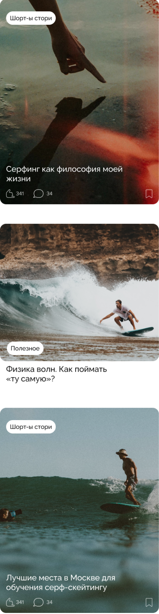

стань true ⠀серфером ⠀⠀в реалиях города
Surface – твой проводник по серф-школам России и миру серфинга
Стоп, что? Серфинг в России?
ДА
Мы уже нашли для тебя ⠀идеальную серф-школу
Все школы отфильтрованы по городам и видам серфинга, так что вы точно не заблудитесь

12 направлений ⠀⠀ на любой вкус
Владивосток
Москва
Санкт-Петербург
Крым
Камчатка
Мурманск
Анапа
Калининград
Сахалин
Курилы
Хабаровск
Сочи
Мы уже нашли для тебя ⠀идеальную серф-школу
Surface — пространство разных мнений, свободных от критики-политики. Поэтому тут о серфинге честно и по делу
